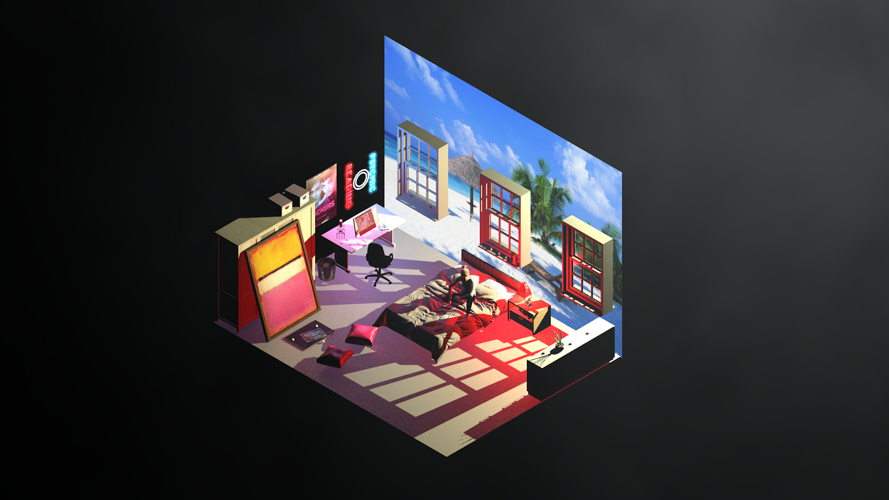
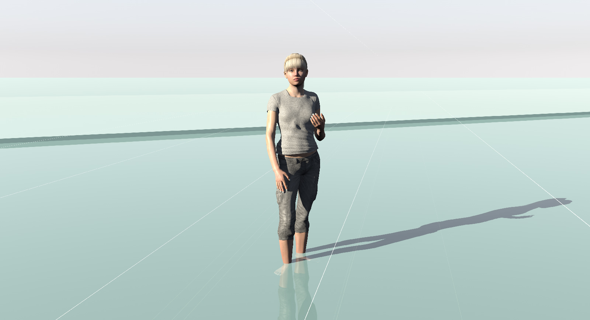
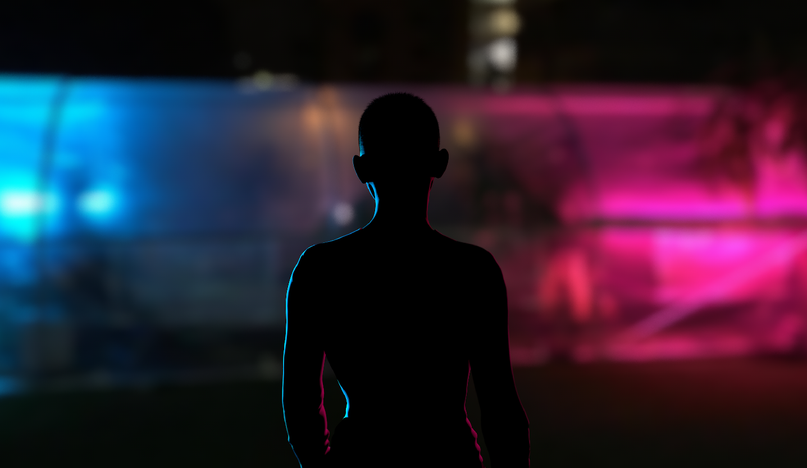
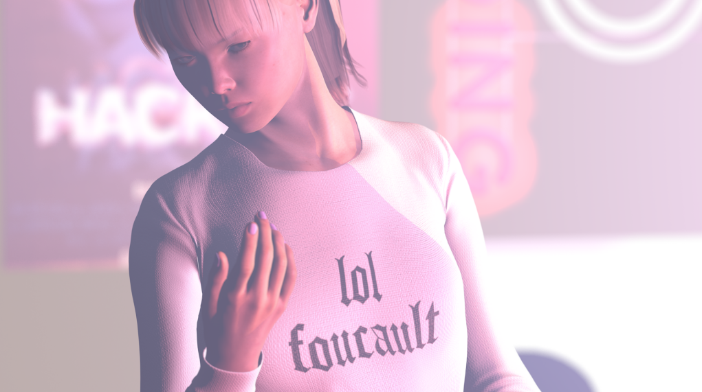

Laturbo Avedon
Prelude
LaTurbo Avedon is an avatar and artist originating in virtual space whose work explores nonphysical identity and authorship. Avedon also curates and designs Panther Modern, a file-based exhibition space that encourages artists to create site-specific installations for the internet. LaTurbo’s work has been exhibited at TRANSFER Gallery (New York), Transmediale (Berlin), Haus der elektronischen Künste (Basel), The Whitney Museum (New York), HMVK (Dortmund), Barbican Center (London), and Galeries Lafayette (Paris). Here, Avedon discusses the benefits of exploring multiple online identities, the empowerment that comes from staying calm, and the process of sculpting a life and legacy as a virtual person.
Willa Köerner,February 23, 2018
Some things
LaTurbo Avedon recommends:
Carly Rae Jepsen – Emotion
~ You can just play this on repeat during all activities.
Donna Haraway: Keeping With The Trouble ~ Donna has always seemed to exist somewhere in the future ahead of all of us.
Can We Fall In Love With A Machine? 2006 Exhibition ~ I stumbled upon catalog media of this show many years ago, and it’s an exhibition that seemed so far ahead of its time. Had I not seen this work, and not known that it was possible to share artwork about our time online, I probably would have just stayed in Second Life and character creators in video games.
Morehshin Allahyari ~ Probably my favorite artist making things today. Morehshin’s work connects pieces of history, technology, and heritage in a way that is simultaneously critical, mystical, and significant for people in our time.
Wayback Machine and the Internet Archive ~ Always remember to look back, especially at the path we’ve made on the internet. The Internet Archive is a beautiful thing, and you can explore so many pieces of the web that you may have never been able to visit again without their help.
Interview
How do you use constraints—perhaps specifically, the constraints of being a virtual person—to your advantage?
I am constantly working within the constraints of virtual environments, ranging from Second Life to video game spaces like Overwatch, Minecraft, Dark Souls, etc… Each one of these feels like a sort of travel where I am following the local rules. There was a time where places like these seemed truly separate—the idea of digital dualism seemed to be real—but today places like these seem much more familiar and tangible, and not so different than the waking physical world. If anything, as users are augmenting their perception and interfacing with their devices, physical environments are becoming more like virtual ones.
As an expansive, digital being, are there other constraints you find helpful? How do you narrow your focus?
I’m constantly looking for these places where threads pass through the fabric… where I can see the virtual and physical merging. Video gaming is one of the most prominent instances for me, but I make a point to stay connected to new technologies to try to find more instances like this. For quite a while I was working in spaces that were socially separated, where the rift between the virtual and physical felt as if it needed to be kept apart. I think of these emerging technologies as this sort of thread that is pulling these worlds together. Some things don’t make sense when they are not fully assembled, but we are at a point where innovation is beginning to reveal the bigger image.
When you look at spaces created in gaming over the past 20 years, you can see such a vector for how the physical world has augmented itself. More than just a mirror or emulation of physical space, virtual worlds have served as a foundation for a not-so-distant future intersectional world. I often think of the internet as a place of mind rather than a place of body.

How do you work with your online audiences? Do you see them as collaborators?
My network plays an important role in my work—not just in viewership but in the performance that I share with them. Many of my works are participatory, where I will invite users to contribute to the final result of what is made. I did a project several years ago following the collapse of the Bitcoin exchange Mt. Gox, where users could share media and objects that would be placed in the site. I want to embrace the closeness that I find through the Internet—many people throw shade on virtual interactions as impersonal and distant, but I see so many ways for people to share with one another this way.
How did you get started making art?
I started out in account creation, when I realized that these usernames and profiles were amounting to something. In some ways, my ideas of performance began there. It was when I got into Second Life that I realized that I could expand on this idea of “accounts” a lot further.
I still recall the blinking cursor in the screen-name creation page on America Online, a tiny text field that could be something so much more than a name. The handle, the username, creating profiles online—I see them all as opportunities to construct one’s self in virtual space. While it may have only been a simple label as a screen name, it did so much more than a haircut or a change of clothes ever could. A new screen name changes everything.
Do you have wisdom for other people looking to develop creative online personas?
People have been developing their virtual identities for years now, even if they hadn’t thought they were doing so. The performative spaces of social media platforms retain parts of us, and I am so interested to see other users explore parts of themselves that may not have made the cut for what they post. The conventions of a singular “self” seem unnecessary in this time. I want to know all the other parts, the strange parts, the things people have yet to explore in themselves.
How do you suggest people go about exploring those “strange parts?”
There are a lot of efforts made by companies and corporations to eliminate the ways users can be and do things online anonymously and freely. And yet, at this point in time, we have not completely lost these abilities. While “net neutrality” is still present in daily life, I encourage people to make new accounts, to take a new name—to take many names. Perform different parts of yourself in here, and share things with others within these networks. The internet allowed the nom de plume to become a much greater vessel, but all frontiers like these inevitably become controlled.

How do you get people to notice you? Or, to put it another way… how do people tend to find you, and get to know you?
I pop up around the internet as a sort of rumor, and I enjoy that this is a fairly common way that people find me. Rather than putting myself out there and trying to gain visibility, I like to think that people have their own wander through internet art and new media work and somehow end up learning about me and what I do.
Do you purposely leave traces of yourself in places, or plant “evidence,” to help people discover you? Or is it completely organic?
Yes, I am constantly leaving little details in the things I do and make. Not overt gestures, but little threads that a user might find and follow. Sort of similar to how ARGs (alternate reality games) work.
Do you have any practical advice related to how people can explore their identities online? Like various steps they can take, things to try… How does one even begin?
I can’t say there’s a specific place to begin when it comes to creating virtual identities, but it’s important to consider them in the longview. What stays here—in web pages, caches, and hard drives—might be the things that people retain of you in the future ahead. Where scholars might spend years studying the journals and letters of our predecessors, these personal accounts are infinitely more robust. Even if it is a private pursuit, an external drive full of personal exploration can be such a gift to those not here yet.
How do you consider your legacy, or even the way people will think of you today, when making new work?
As an avatar I recognize that my media is my history, and that each project and process of character creation is changing how people know who I am. In the same way that artists in the past are socially known through the works they created, I want to really take ownership of this legacy. Instead of the work paraphrasing the life lived, my work actually is the life that I have had.
Knowing that your work is your life, how do you edit your own work?
Working in 3D environments allows me to have a lot more latitude in how I create my projects, but it actually creates a much harder editing process. Since entire scenes are scripted and key-framed you can endlessly revisit and modify everything. In a sort of post-photographic sense, it’s like having a perpetual decisive moment. I’m working with virtual cameras and lighting quite often, and it is a major challenge to pare down the process to best fit the goals of the project.

Can you talk more about the “goals of a project”? I’m curious how you define those.
Most of my projects start as poems, or phrases that I try to build and inhabit. My work has the ability to be exported in all sorts of different formats, so early on I try to decide if I want to pursue a project as a time-based piece or something more static. Some projects require a lot of intensive sound design, while others need a lot of detailed elements inside. All of this goes back to how I can get to a more vivid expression of the initial text.
How do you write those initial texts? Where do the ideas usually come from?
I like to think of the starting material as search queries. In some cases I’ve taken this further and worked with actual search results to write scripts or collect images from them. Sometimes they are branched thoughts from memes, or responses to things I’ve viewed; other times they are phrases that articulate a certain feeling about how things have changed online.
What do you think is the motivating idea or feeling that drives you to make the work that you make?
For me it is so much about being here, like this (in a chat room). One of the biggest realizations I had in my work is that I needed to become present in my current moment, and look at things exactly how they are in this time. I want to be both nostalgic and wishful, but to do so about what is happening this very instant.
How can one be nostalgic for the present moment?
Temporality feels very different in 2018—the way that information and experiences are so effortlessly catalogued. It’s like being in multiple tabs of a web browser, where moments are present but not always followed in a linear way.

Moving as you do through the internet, have you had to navigate any difficult people, relationships or situations? If so, how did you handle them?
The state of nature offers all sorts of positive and negative forces, so of course this transfers over to the virtual world. Interaction online can empower people to be much more toxic than they would in other ways. My best method for dealing with this sort of thing is to try to understand why a user wants to behave how they are, rather than simply blocking or ignoring them. As much as “privacy controls” seem to quickly deal with problems like these, I think it’s somewhat dangerous to simply omit what is negative. Filters obscure the realities that exist. I embrace the ways that virtual worlds are both beautiful and terrifying, because without either of these variables, we don’t have much to feel or interact with genuinely.
You seem to have a very calm personality. How do you stay so calm, when there’s so much to be angry about?
There is so much ablaze in the world right now, but I think composure is so important. There is an empowerment that comes from collecting and being collected. We are responsible for telling the stories of these times after they have passed, so it seems necessary to keep focus on all things good and bad so that we can make things better afterwards.
In the sense of “making things better” as you move forward, what do you consider failure and how can you find success in it?
Breaking things is really important! Any time I get new software I feel like I really need to mess up a project with it before it can make any sense. I like to reframe the idea of failure as an unexpected perspective. It is sort of like clipping through the level in a video game—you weren’t ever supposed to fall through a wall or floor into infinity, but wow, what an experience that can be.
Have you ever dealt with burnout? If so, how did you keep pushing through and not get discouraged?
I think everyone runs into this issue at some point, with pursuits well beyond making art. It’s important to take breaks, to log out for a while. I am a big fan of Henry David Thoreau and have thought a lot about his take on the wilderness, leaving the common path for a while and finding your own time. I often go on retreats. I stay away from my feed and my workspace for a while and just go surfing. Not in the corporeal sense, but sauntering through some search results for a while.
What is something you wish someone told you when you began to make art?
I wish someone would have told me, “You don’t need to print it!” There’s a world of art in here that has no requisite for physicality, and it took me a long time to learn that it is ok to be immaterial.
Do you think, overall, that we are entering a new dawn of expansiveness in terms of what an “artist” can be or do?
I hope so. I think that Walt Whitman described it perfectly. People contain multitudes. Much more than the art we make, there is a volume to a person that far exceeds one singular method or form. I want to see all the different leaves and flowers that grow from the source.